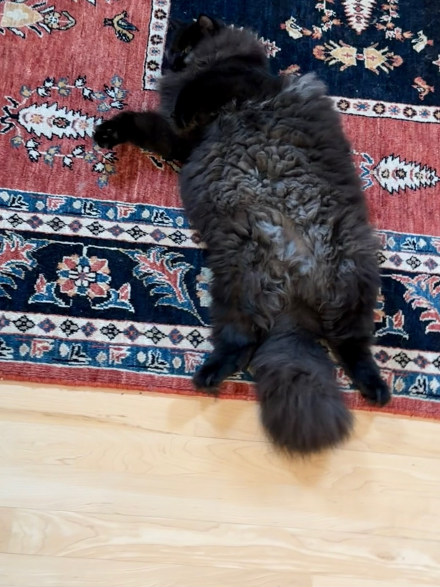
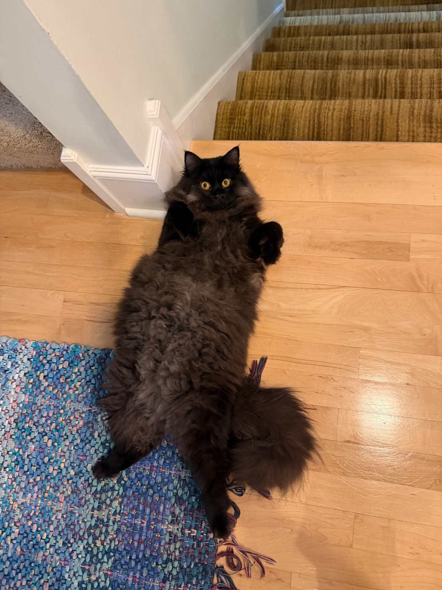
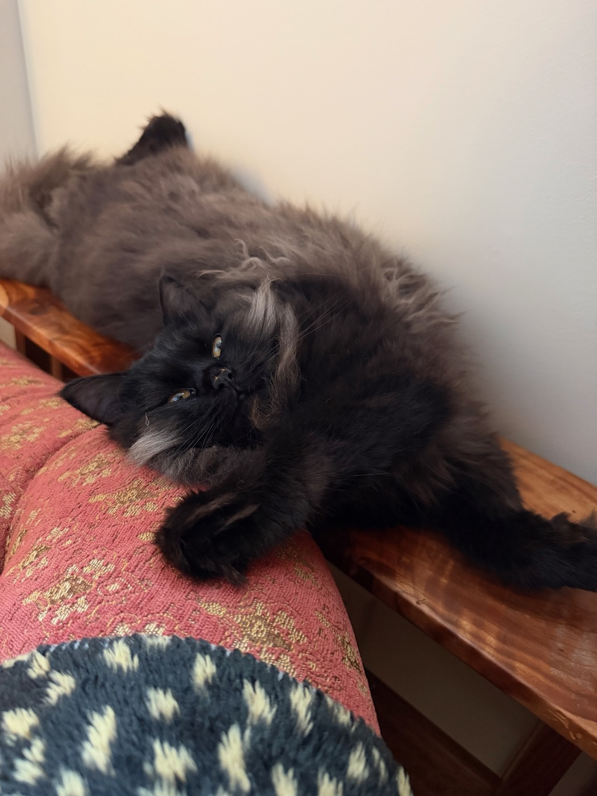

At some point this September both cats arrived, separately and without conferring, at the same conclusion: the floor is best experienced from underneath. What follows is the evidence.
The sprawl, as practiced
Zeta's version is total. On the rug she goes fully over — all four legs out, tail trailing off onto the hardwood, head turned away from whoever is holding the camera, which is its own kind of statement. At the foot of the stairs the pose is identical but the attention is not: forepaws folded to her chest, eyes wide open and fixed on the lens. Same sprawl, different audience.


And when the floor runs out, the side table wedged between the wall and the sofa will do — head hung backward over its edge above the sofa cushion, one paw up at the chin, regarding the room sideways as though it were the room that had gone the wrong way up.

Variations on a theme
Entropy treats the same position as a range rather than a destination. On the hardwood by the chair leg it is an invitation — rolled over, paws drawn up, head tipped back to check whether anyone is coming. On the rug it is a nap, eyes down to slits, the pose held only because getting up would take effort. And back on the hardwood it becomes a full stretch: front legs out past his head, back legs the other way, every available inch claimed. Zeta's tail is just entering the frame, which is as close as she comes to endorsing it.


Two cats, one position, six readings. The floor, for its part, has yet to file an objection.